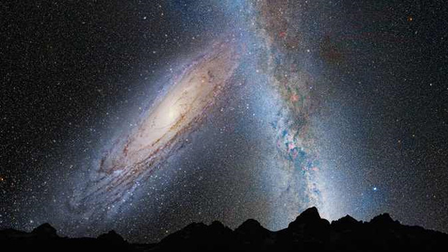
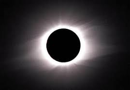

Az Androméda-galaxist a felfedezésekor (az 1600-as években) csak egy kis ködös foltnak látták az akkori távcsövekben, ezért nevezték el Androméda-ködnek. Ma már tudjuk, hogy valójában nem köd, hanem egy spirálgalaxis. A mi saját galaxisunk (a Tejútrendszer) körül található törpegalaxisokat leszámítva az Androméda-galaxis a legközelebbi "külső" galaxis (azaz extragalaxis), melynek távolsága tőlünk 2,5 millió fényév (míg a Tejútrendszer illetve az Androméda-galaxis átmérői nagyságrendileg 100 ezer fényév, vagyis 25-ször akkora a távolság a két galaxis között, mint amekkora a méretük).
Össztömege 370 milliárd naptömeg. Az Androméda-galaxis a mérések szerint 270 km/s-os sebeséggel közeledik felénk, azaz közel 1 millió km/h sebességgel, vagyis a fénysebesség ezredrészével. Még nem tudjuk hogy végül elér-e hozzánk (ez az Univerzum tágulásának részleteitől függ, ami talán kompenzálja a közeledést, mint sajátmozgást), ha igen, az kb. 4 milliárd év múlva lesz csak, így ettől még ükunokáinknak sem kell tartaniuk.

De mi lesz, ha "összeütközünk"? annak a valószínűsége, hogy két csillag vagy bolygó a galaxisok találkozásakor összeütközik (mint két billiárdgolyó), az rendkívül kicsi. Inkább olyasminek kell elképzelni a folyamatot, mintha 2 ember szemben állna mondjuk 10 méter távolságban, és egyszerre egymás felé dobnának 1-1 maréknyi cseresznyemagot. A két "cseresznyemagfelhő" jó esélyel úgy haladna át egymáson, hogy egyetlen cseresznymag sem ütközne egy másikkal. Galaxisok összeütközésekor azonban a helyzet annyiban bonyolultabb, hogy a gravitáció szerepe (a cseresznyemagos példával ellentétben) igen jelentős: a gravitáció próbálja "egyesíteni" a két galaxist.
Az Androméda-galaxis közelít, és mindent magába szippant. A Tejútrendszerrel szomszédos nagy galaxist vizsgáló „kozmikus régészek” nemzetközi csapata felfedezte, hogy az M31-nek furcsa kannibalisztikus múltja van.
„A Tejútrendszer egy ütközési pályára kerül az Andromédával körülbelül négymilliárd éven belül, tehát annak ismerete, hogy milyen szörnyeteggel áll szemben a galaxisunk, hasznos abban a tekintetben, hogy megtudjuk végső sorsát”
Legközelebbi gyűrűs napfogyatkozás Mo-n:2075.07.13.
Legközelebbi teljes napfogyatkozás Mo-n:2081.09.03
Legközelebbi teljes napfogyatkozás:2026.08.12. Helyszín:Izland,Spanyolország

A 99942 Apophis (ideiglenes nevén 2004 MN4) földsúroló kisbolygó, melyet Roy A. Tucker, David J. Tholen és Fabrizio Bernardi fedeztek fel 2004. június 19-én a Kitt Peak Nemzeti Obszervatóriumban, Arizonában. Kisebb aggodalmat váltott ki, amikor a bolygó pályájának pontosabb ismeretében kiderült, hogy viszonylag nagy, 2,7%-os esélye van a Földdel való ütközésnek 2029-ben, ezzel a veszélyes égitesteket minősítő Torino-skálán az eddigi legmagasabb, 4-es besorolást érte el.
A pontosabb számítások szerint ekkor az égitest egy gravitációs kulcslyukon fog áthaladni, és előfordulhat, hogy 2036. április 13-án ütközik a Földnek, ennek az esélye eredetileg 1 a 45 000-hez volt, később, pontosabb számítások alapján ez 1 a 250 000-hez esélyre csökkent (egy elmélet szerint azonban 1:450-hez, amit egy 13 éves német fiú számolt ki először), de a kisbolygó így is 29 450 kilométerre halad el a Föld felszíne felett, közelebb, mint a geostacionárius pálya.Nevét Apóphisz után kapta, aki a pusztítás, a sötétség és a káosz megtestesítője az egyiptomi mitológiában.
2029. április 13-án a kisbolygó meglehetősen közel, a geostacionárius pályánál közelebb (nagyjából 30 000 km-re) halad el a Föld mellett.